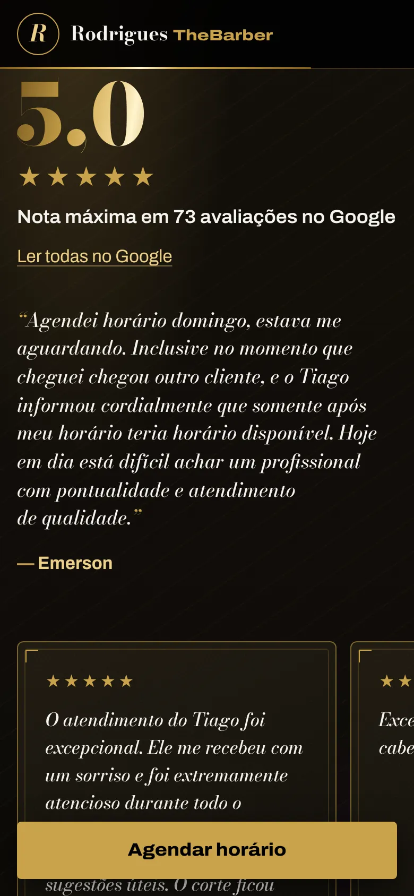

Barbearia em Eldorado do Sul (RS) · site publicado
Rodrigues TheBarber
O Tiago atende um cliente por vez, sempre com hora marcada. Quem chega ao site quer resolver três coisas: saber quanto custa, ver se o corte é bom e conseguir um horário. A página foi organizada em torno dessa última ação.
Abrir o site da barbearia (abre em nova aba)A primeira tela responde quem atende, onde fica e como marcar
- O botão de agendar fica no cabeçalho, que acompanha a rolagem.
- O retrato apresenta quem vai atender. Numa barbearia de um profissional só, a pessoa escolhe o barbeiro junto com o lugar.
- Logo abaixo, uma faixa reúne a nota no Google, se a barbearia está aberta agora e o endereço.

No celular, a ordem muda
No telefone, o nome, a frase e os dois botões vêm antes do retrato: a ação aparece sem rolar. Quando a abertura sai da tela, uma barra com “Agendar horário” se fixa no rodapé. Ela some de novo quando o formulário está à vista, para não repetir o que a pessoa já está vendo.



Preço sem letra miúda
Os serviços estão em quatro grupos (cortes, barba, pigmentação, luzes e cor), além de um combo. Antes da tabela vêm duas respostas que costumavam virar pergunta no WhatsApp: o visagismo está incluso e o pagamento é no local, em dinheiro, Pix ou cartão.
Os valores vêm do painel da barbearia: quando o Tiago muda um preço, o site mostra o novo valor.
Pedir um horário, passo a passo
Sequência real do formulário, capturada com a agenda de teste do próprio projeto. Nenhum pedido foi enviado à barbearia.
-

Serviço e dia. A agenda mostra uma semana por vez, a partir de hoje, e só consulta horários quando serviço e dia estão escolhidos. -

Horários por período. Os horários livres aparecem em manhã, tarde e noite, com a quantidade de cada um, para a lista não virar um paredão de botões. Dias e horários também respondem às setas do teclado. -

Resumo antes de enviar. Escolhido o horário, uma frase confirma serviço, dia e hora. Só então o botão de solicitar fica ativo. -

Erro explicado no lugar. Com um WhatsApp incompleto, nada do que foi preenchido se perde, e a mensagem mostra o formato esperado logo abaixo do campo.